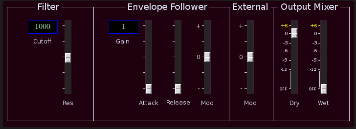

Hund

| Home | Contents | Synth Catalog | Previous: Galvaniser | Next: Mixer |
Filter with envelope follower.
 Filter:- Cutoff button, filter cutoff.
- Res slider, resonance.
- Gain button, follower sensitivity.
- Attack, follower attack time.
- Release, follower release time.
- Mod, follower to frequency cutoff.
- external control applied to filter cutoff.
- Dry - dry signal mix
- Wet - wet signal mix
Buses:
- inbus - audio input
- outbus - audio output
- xbus - control input
- envout - envelope follower output
Parameters:
- pregain - envelope follower input gain (1/8,1/4,1/2,1,2,3,4,6,8,12,16)
- attack - envelope follower attack time (0 ... 4)
- release - envelope follower release time (0 ... 4)
- filterFreq - filter fixed cutoff (100,200,400,800,1k,2k,4k,8k,20k)
- res - filter resonance (0 ... 1)
- modDepth - envelope follower to filer frequency (-1 ... +1)
- xmod - external control to filter frequency (-1 ... +1)
- dryamp - dry signal amp (0 ... 2)
- wetamp - wet signal amp (0 ... 2)
| Home | Contents | Synth Catalog | Previous: Galvaniser | Next: Mixer |